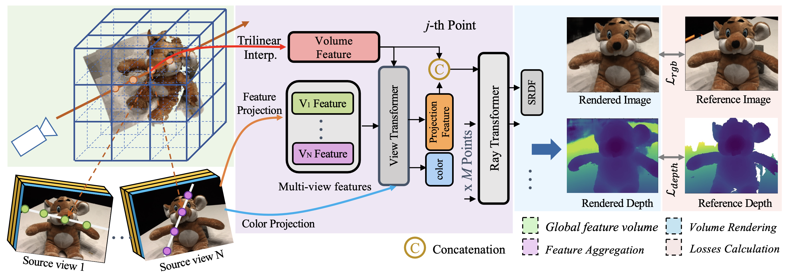

Abstract
The success of the Neural Radiance Fields (NeRF) in novel view synthesis has inspired researchers to propose neural implicit scene reconstruction. However, most existing neural implicit reconstruction methods optimize per-scene parameters and therefore lack generalizability to new scenes. We introduce VolRecon, a novel generalizable implicit reconstruction method with Signed Ray Distance Function (SRDF). To reconstruct the scene with fine details and little noise, VolRecon combines projection features aggregated from multi-view features, and volume features interpolated from a coarse global feature volume. Using a ray transformer, we compute SRDF values of sampled points on a ray and then render color and depth. On DTU dataset, VolRecon outperforms SparseNeuS by about 30% in sparse view reconstruction and achieves comparable accuracy as MVSNet in full view reconstruction. Furthermore, our approach exhibits good generalization performance on the large-scale ETH3D benchmark.
Video
Poster

BibTeX
@inproceedings{ren2023volrecon,
title={Volrecon: Volume rendering of signed ray distance functions for generalizable multi-view reconstruction},
author={Ren, Yufan and Wang, Fangjinhua and Zhang, Tong and Pollefeys, Marc and S{\"u}sstrunk, Sabine},
booktitle={Proceedings of the IEEE/CVF Conference on Computer Vision and Pattern Recognition},
pages={16685--16695},
year={2023}
}